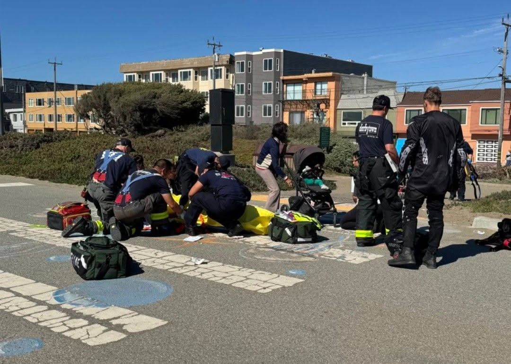
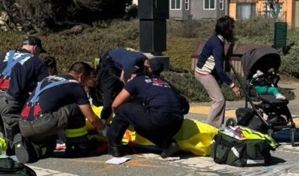
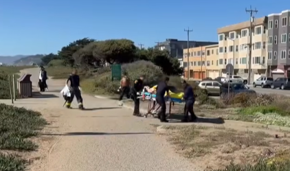

A Very Dangerous Park
In Just a Short Time There Have Been Three Major Injury Accidents

Since the closure of the Great Highway and the creation of Sunset Dunes, there have been at least three major injury accidents. These have been collisions between various vehicles including an e-bike and electric unicycle and pedestrians resulting in serious injury.
E-bikes and electric unicycles are capable of up to 28 MPH and do not require any kind of license. The Sunset Dunes people have banned cars from the Great Highway, but allow these other vehicles. The road has become an expressway for these other vehicles, many of which drive recklessly. From a speed of 28 MPH it takes a car about 35 feet to stop. It can take an e-bike 100 feet.
The city should be discouraging these, but in fact, there are four places to rent Lyft e-bikes on the Lower Great Highway and a fifth nearby next to the zoo.
A Four-Year-Old Struck by an e-bike
On August 17, 2025, there was a collision between an e-bike and a four year old.
An Elderly Woman Struck by a Bicycle
On July 1, 2025, an elderly woman was struck by a bicycle.
A Young Mother Struck by an Electric Monocycle
On July 25, 2026, a young mother walking with her child and dog was struck by an electric unicycle traveling at about 25 MPH. She was badly injured and taken to the trauma unit at San Francisco General Hospital.


It is amazing no one has been killed yet
While Parks and Rec claims to have taken steps to separate pedestrians from vehicles, it's just not true. There are just a few signs at the ends of the road and nothing else to separate the vehicles from the pedestrians. When I recently visited, one of the two signs at Lincoln was broken and lying face down on the road.
These accidents started almost as soon as the road was closed. Parks and Rec and the city have done almost nothing to prevent these.